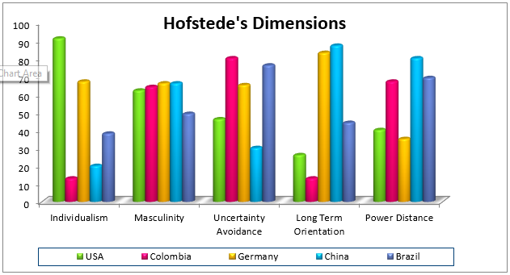

In 1990 Avianca flight 052 was en route from Medellin to New York’s JFK airport. The flight was heavily delayed, like many others that day, due to high winds and dense fog. After being instructed by Air Traffic Control (ATC) to circle around various times, they were finally cleared to land. However the plane was faced with a strong wind causing them to fall too fast to make the runway, so the pilot had to execute a “go-around.” By that point the plane was severely low on fuel yet ATC directed them 15 miles northwest of the airport due to high traffic. In the very last seconds the pilot yelled “show me the runway!” but it was too late and the plane began to plummet.
So what happened in those final minutes, as the plane circled around JFK that led to its fall? An interesting analysis has done by Malcolm Gladwell his bestselling book Outliers, where he explains how instances such as these can be explained by the tendencies a person has due to the country they come from. To explain these cultural differences he looks at the 5 Hofstede Dimensions.
Geert Hofstede is a Dutch psychologist who worked for the human resources department of IBM in the 60’s and 70’s. His job was to travel around the world interviewing employees about how they solved problems, how they worked together, and what their attitudes towards authority were. Over time his database had grown so large that he was able to analyze cultural differences and make predictions on doing business abroad. Nowadays Hofstede’s Dimensions are some of the most used paradigms in cross-cultural psychology.
Let’s take a look at 5 different countries to compare…
This dimension indicates the degree to which individuals are integrated into groups or are expected to take care of themselves. We can see this for example with the United States, the highest ranking individualist country, which is also the only Western country without universal health care for its citizens. On the other end of the spectrum China is the lowest ranked individualist Asian country, where precedence is set where everyone takes responsibility for fellow their members and look out for the benefit of the group as a whole.
“Masculine” countries value competitiveness, assertiveness and the accumulation of wealth and material possessions, while “feminine” cultures are found to value relationships and quality of life. All 5 of the countries have average masculinity rankings, with China being slightly higher than the rest. In companies leaders are role models and employees tend to shadow the behavior of their leader of such tendencies. For example if the leadership team is competitive, it is likely that the team will be aggressive to beat out competitors. Vice versa, employees with caring and modest bosses will be more tolerant and compassionate when doing business.
This dimension looks at the level of need for structure in a society. Cultures with low uncertainty avoidance, like China and USA, are more likely to accept risks and changes. On the other hand countries like Germany, Colombia, and Brazil prefer stability and clear guidelines. Depending on the type of business, tolerances for uncertainty may occur on different levels. For example a factory should have rules that establish structure and safety, whereas a marketing agency should encourage flexibility and creativity.
Countries with long-term orientation, like Germany and China, place importance upon family, discipline and social obligations. When doing business with professionals from such cultures, a strong work ethic can be expected, but also for deals to take longer to close. On the other hand countries such as USA and Colombia have a short-term orientation where changes and decisions tend to happen more rapidly.
In a culture with a high-power distance the less powerful members are more likely to accept and expect that power is distributed unequally. This can be seen in countries such as Colombia, Brazil, and China. Hofstede found that cultures with high-power distances often had employees that did not feel that their contribution mattered much to their company, and that lower level employees did not feel comfortable disagreeing with their superiors.
So how does this explain the Avianca flight crash? Well Gladwell correlates this directly with the power distance dimension. As Colombia has a high power distance, people are taught to respect those in charge and in this case Klotz (the first officer) felt that he was a subordinate to the controllers giving him orders. After the crash, the plane’s black box revealed what really happened on flight 052. Klotz, in his own cultural language, told ATC “ah we’re running out of fuel sir.” On the other hand the controllers at JFK, who were low-power distance New Yorkers, did not sense any urgency from Klotz’ mitigated response. Gladwell explains the different ways to communicate a conflict and mitigation is the least direct way, yet the most commonly used in high-power distance cultures. In the end the crash was a result of both parties speaking different cultural languages where clear communication was completely broken down.
Hofstede does not suggest that being on either side of these scales is good or bad, nor does he imply that the position of someone’s country is always an indicator of how that individual will act. Instead he argues that each person has their own unique personality, but on top of that are tendencies and behaviors which are passed down to a person from the community in which they grew up in.
With technology evolving and distances vanishing, globalization is becoming even more of a reality and we find ourselves doing business with people from all over the world. When it comes to doing business internationally, there is no right way to do it but what is becoming very evident is that we need to understand how other cultures are and find better ways to communicate with each other.